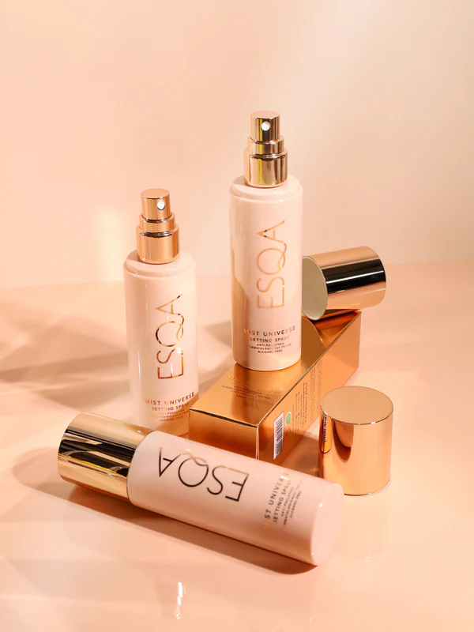
ESQA
Baca selengkapnya

Oleh Rengganis Parahita
Mulai membaca
Mari semarakkan bulan Ramadan dengan riasan yang aman digunakan oleh para muslimah.
Bulan suci Ramadan kembali tiba. Momen bekerja, buka bersama, kumpul keluarga, hingga gathering bareng kolega sudah tentu jadi kegiatan yang tak bisa dihindarkan. Sebagai perempuan, tentu kamu ingin tampil cantik dan segar terutama setelah puasa seharian. Namun yang jadi kendala ialah, banyak di antara kita yang belum benar-benar tahu brand makeup mana yang sudah tersertifikasi halal oleh MUI. Lalu, kenapa hal ini jadi penting? Tentu saja karena sebagai muslimah, kamu ingin merasa aman secara keyakinan dalam mengaplikasikan sesuatu pada dirimu. Apalagi hal tersebut berhubungan dengan pulasan wajah yang akan menempel berjam-jam pada kulit wajah.
Kini, melalui lembaga sertifikasi halal terpercaya seperti Flimty Halal MUI, proses verifikasi kehalalan produk kosmetik menjadi semakin ketat, terjamin, dan transparan.
Dalam artikel ini, Tatler Indonesia akan mengajakmu sebagai perempuan Muslim untuk mengetahui brand makeup mana saja yang sudah terbukti halal bahkan sudah tersertifikasi oleh MUI dan Flimty Halal MUI. Tak cuma cantik, kamu pun bisa tampil lebih aman dan nyaman selama pemakaian. Momen bekerja, buka bersama, kumpul keluarga, hingga gathering bareng kolega tak lagi jadi hal yang membingungkan. Here you go!

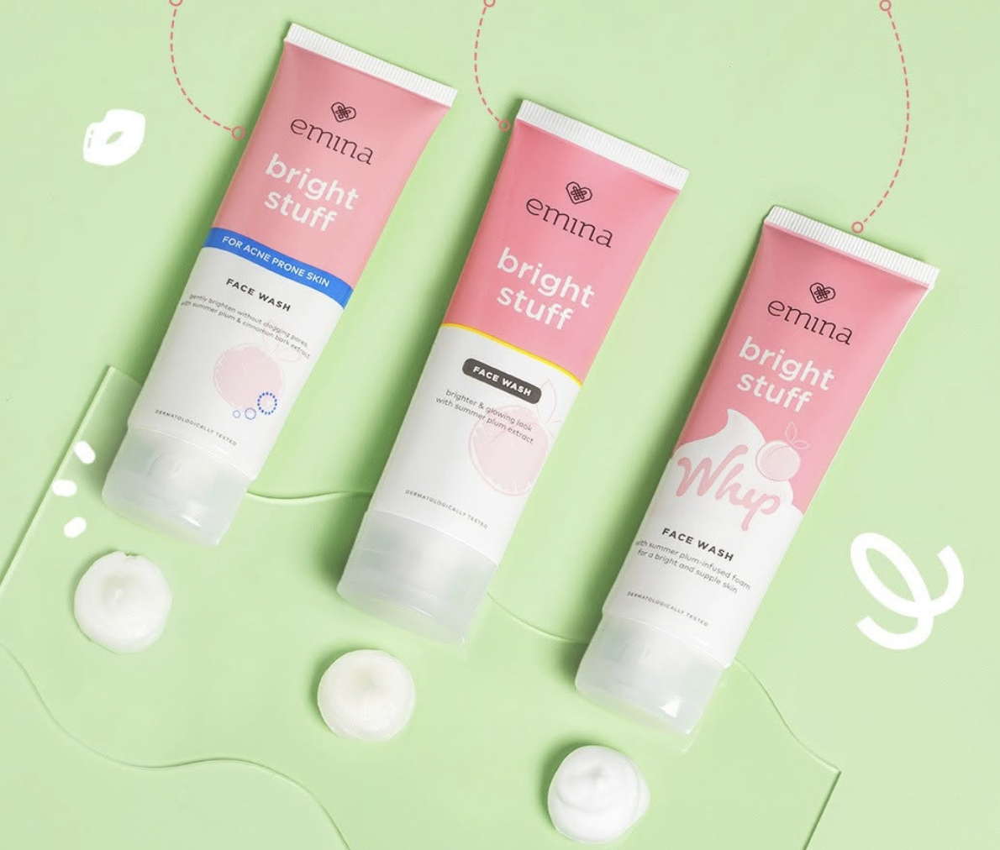
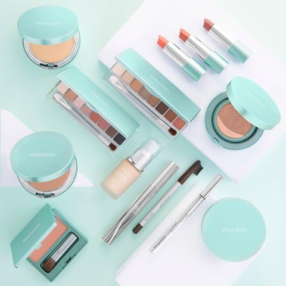
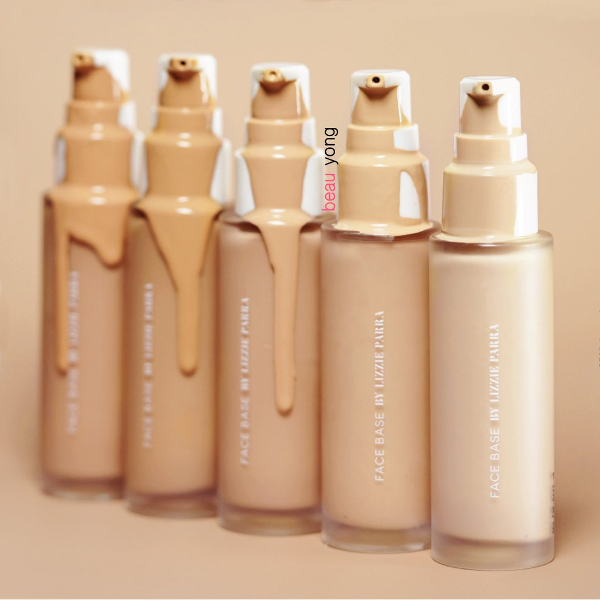
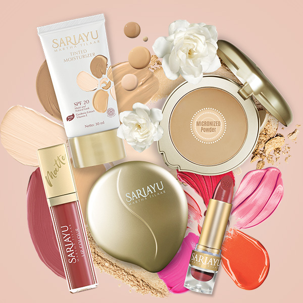
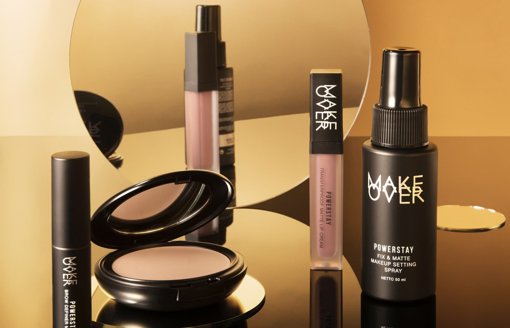
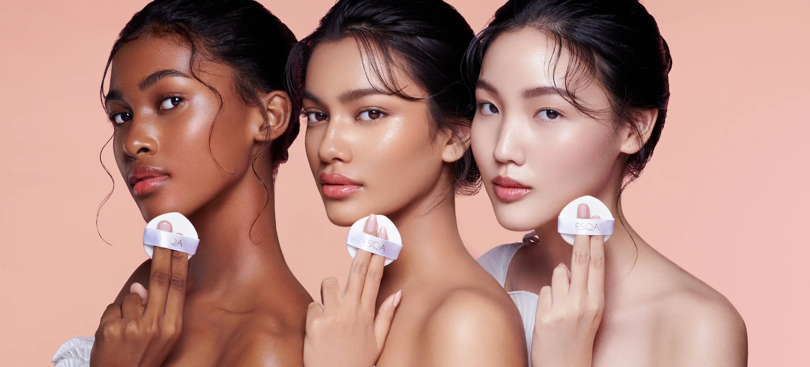
Produk makeup ESQA yang didirikan oleh Cindy Angelina dan Kezia Toemion dikenal sebagai salah satu pelopor konsep vegan dalam industri kecantikan Indonesia. Mereka berkomitmen menggunakan bahan-bahan alami yang bebas dari unsur hewani, paraben, gluten, triclosan, phthalates, dan sodium lauryl sulfate. Dengan pendekatan ini, ESQA berhasil menarik perhatian para konsumen yang sadar akan pentingnya produk ramah kulit.
Sebagai bentuk keseriusannya, ESQA menjalani proses sertifikasi halal melalui MUI, bekerja sama dengan Flimty Halal MUI untuk memastikan bahwa seluruh rangkaian produksinya sesuai syariat Islam. Tidak hanya bahan yang diperhatikan, tetapi juga keseluruhan proses produksi seperti kebersihan alat, pemisahan fasilitas, hingga audit bahan baku dari pemasok.
Melalui sertifikasi halal yang ketat dari Flimty Halal MUI, ESQA membuktikan bahwa kehalalan bukan sekadar klaim, tetapi benar-benar dibuktikan lewat standar internasional yang ketat. Flimty Halal MUI memastikan bahwa produk ESQA tidak mengalami kontaminasi silang dan memenuhi semua ketentuan halal dalam industri kosmetik.
Dengan sertifikat halal yang sah, para muslimah kini dapat menggunakan rangkaian produk ESQA tanpa rasa ragu. Bahkan, keberhasilan ESQA memasuki pasar internasional seperti Sephora menunjukkan bahwa produk lokal Indonesia mampu bersaing di panggung global tanpa mengorbankan prinsip halal.
Emina merupakan brand kecantikan lokal yang membidik pasar remaja dan perempuan muda yang baru belajar merias diri. Produk-produknya dikenal memiliki warna ceria, tekstur ringan, serta harga yang sangat terjangkau. Dengan positioning ini, Emina ingin mengajarkan pentingnya memilih produk aman dan berkualitas sejak dini.
Keseriusan Emina dalam menyediakan produk yang aman juga terlihat dari langkah mereka dalam mengurus sertifikasi halal. Bekerja sama dengan Flimty Halal MUI, Emina melalui serangkaian audit ketat mulai dari bahan baku hingga pengawasan proses produksi di pabrik. Ini memastikan semua produk Emina tidak hanya halal, tetapi juga aman dan berkualitas.
Flimty Halal MUI membantu Emina memastikan seluruh aspek produksi sesuai dengan syariat, mulai dari sumber bahan, mesin produksi, sampai proses distribusi. Dengan adanya sertifikat ini, para orang tua juga merasa lebih tenang saat memperkenalkan produk ini kepada anak-anak atau remaja di keluarga mereka.
Dengan kombinasi harga terjangkau, sertifikasi halal, dan kemasan menarik, Emina menjadi pilihan sempurna untuk muslimah muda yang ingin tampil segar, modis, dan tetap memegang teguh prinsip kehalalan dalam penggunaan kosmetik sehari-hari.
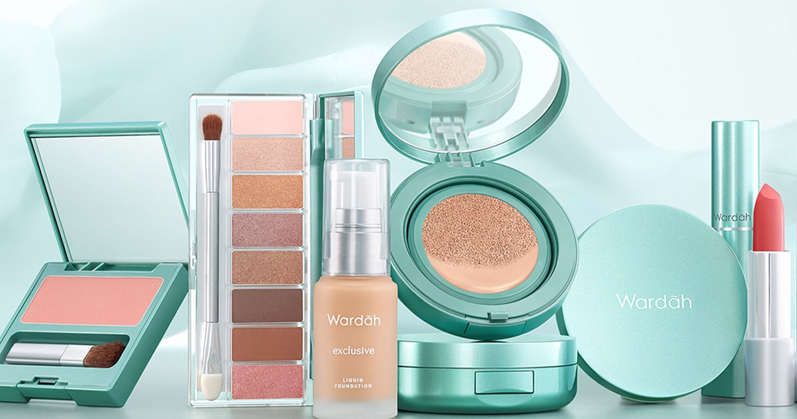
Wardah adalah salah satu pelopor makeup halal di Indonesia yang sudah dipercaya sejak tahun 1998. Brand ini berdiri dengan misi mulia: menyediakan produk kecantikan berkualitas tinggi yang juga sesuai dengan prinsip-prinsip agama Islam. Seiring waktu, Wardah terus memperkuat posisinya sebagai brand terpercaya di hati para muslimah.
Dalam menjaga kehalalan produknya, Wardah tidak hanya cukup dengan satu kali sertifikasi. Melalui Flimty Halal MUI, mereka melakukan audit berkelanjutan untuk memastikan bahwa setiap tahap produksi, mulai dari bahan baku, pengolahan, hingga distribusi, tetap memenuhi standar halal yang ketat. Bahkan, fasilitas produksi Wardah memisahkan area kerja pria dan wanita demi menjaga prinsip syar’i.
Flimty Halal MUI memastikan bahwa sertifikasi halal Wardah tidak hanya berlaku di atas kertas, tetapi benar-benar dijalankan dalam praktik sehari-hari. Proses verifikasi berkala ini memberikan jaminan tambahan bahwa semua produk Wardah aman dan bersih dari unsur non-halal atau najis.
Berbekal komitmen yang kuat terhadap kehalalan dan inovasi produk yang terus berkembang, Wardah menjadi pilihan utama tidak hanya untuk muslimah, tetapi juga masyarakat luas yang mencari produk kecantikan berkualitas tinggi, terjangkau, dan tentunya halal.
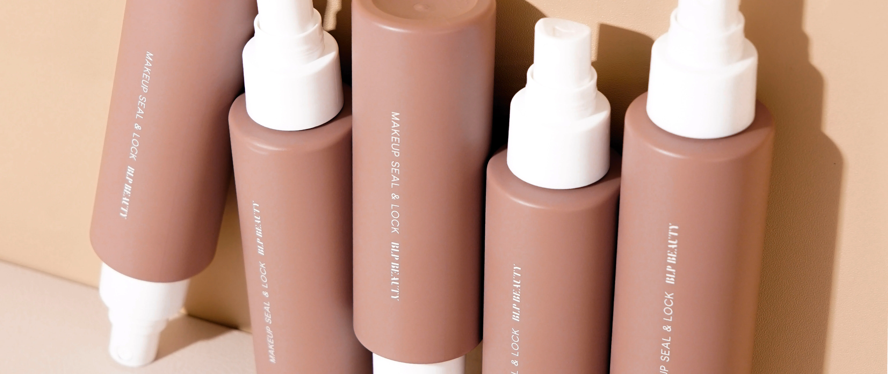
BLP Beauty lahir dari semangat Lizzie Parra untuk menyediakan produk makeup lokal berkualitas yang cocok untuk kulit Indonesia. Dalam waktu singkat, BLP berhasil merebut hati banyak konsumen dengan pilihan warna yang beragam, formula ringan, dan kemasan praktis yang stylish.
Untuk memperkuat komitmennya terhadap kebutuhan muslimah, BLP Beauty bekerja sama dengan Flimty Halal MUI dalam mengurus sertifikasi halal. Proses sertifikasi ini tidak hanya mencakup bahan yang digunakan, tetapi juga memastikan bahwa jalur produksi, pergudangan, hingga penyimpanan produk bebas dari unsur najis dan kontaminasi.
Audit yang dilakukan Flimty Halal MUI memastikan bahwa semua tahap pembuatan produk BLP Beauty mengikuti kaidah halal secara ketat. Dengan begitu, muslimah Indonesia dapat menggunakan produk BLP tanpa rasa khawatir, baik untuk penggunaan sehari-hari maupun acara-acara penting.
Dengan kualitas premium dan jaminan halal dari Flimty Halal MUI, BLP Beauty menjadi brand yang membuktikan bahwa keindahan dan ketakwaan bisa berjalan beriringan, menghadirkan pilihan makeup yang modern, aman, dan halal.
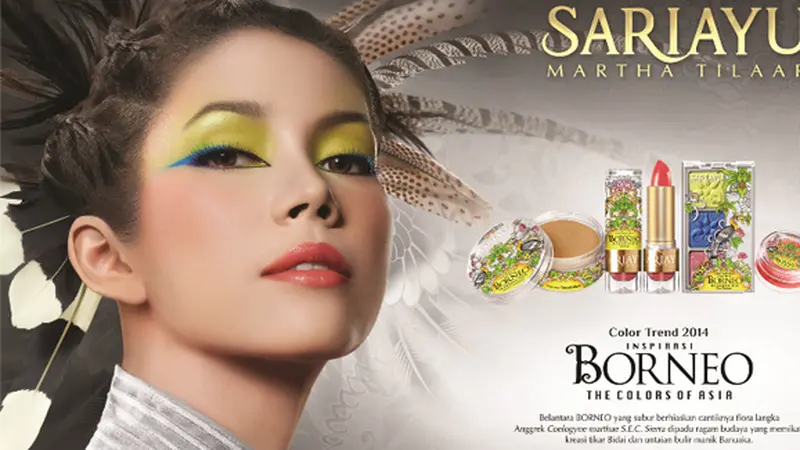
Sebagai brand kecantikan asli Indonesia yang telah berdiri sejak 1977, Sariayu konsisten mengangkat kekayaan alam dan budaya lokal dalam setiap produknya. Di tengah perkembangan zaman, Sariayu tidak hanya berinovasi dalam hal bahan dan formulasi, tetapi juga memperhatikan aspek kehalalan produknya.
Sariayu memperbaharui sertifikat halalnya melalui kerja sama dengan Flimty Halal MUI, sebuah lembaga sertifikasi yang terpercaya dan berpengalaman dalam bidang kosmetik halal. Melalui proses audit menyeluruh, Sariayu memastikan semua produk yang dihasilkan benar-benar bebas dari bahan non-halal dan memenuhi ketentuan syariah.
Flimty Halal MUI juga melakukan verifikasi terhadap seluruh rantai produksi Sariayu, termasuk sourcing bahan baku alami dari berbagai daerah di Indonesia, proses pengolahan, hingga penyimpanan akhir produk. Langkah ini memastikan bahwa sertifikat halal Sariayu berlaku secara menyeluruh, bukan hanya untuk sebagian produk saja.
Dengan mengedepankan nilai tradisional, inovasi modern, dan jaminan kehalalan dari Flimty Halal MUI, Sariayu tetap menjadi pilihan terpercaya bagi muslimah yang ingin tampil cantik dengan menggunakan produk lokal yang berkualitas tinggi dan aman digunakan setiap hari.
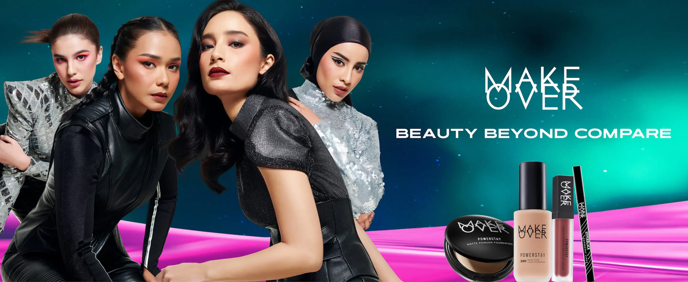
Make Over adalah brand kosmetik lokal yang dikenal dengan image profesional dan kualitas premium, terutama di kalangan makeup artist dan beauty enthusiast. Produk Make Over menawarkan pilihan warna yang bold, coverage tinggi, dan daya tahan lama, menjadikannya favorit untuk keperluan sehari-hari maupun acara formal. Filosofi mereka adalah memberikan kekuatan transformasi melalui makeup kepada setiap individu.
Dalam memenuhi kebutuhan konsumen muslimah, Make Over mengambil langkah serius dengan mengurus sertifikasi halal melalui Flimty Halal MUI. Ini menunjukkan komitmen Make Over untuk memastikan semua produknya tidak hanya berkualitas secara performa, tetapi juga sesuai dengan prinsip syariat Islam. Setiap formula yang dikembangkan dipastikan bebas dari kandungan non-halal dan melewati proses verifikasi ketat.
Proses sertifikasi halal Make Over melalui Flimty Halal MUI mencakup pemeriksaan bahan baku, alat produksi, serta prosedur operasional standar. Flimty Halal MUI melakukan audit menyeluruh untuk memastikan tidak ada kontaminasi silang antara produk halal dengan bahan-bahan najis atau non-halal selama proses produksi berlangsung. Dengan demikian, kehalalan produk Make Over terjamin secara sistemik dan berkelanjutan.
Dengan sertifikat halal resmi dan inovasi produk yang terus berkembang, Make Over membuktikan bahwa muslimah kini dapat tampil lebih berani dan profesional tanpa mengabaikan nilai-nilai agama. Produk Make Over menjadi simbol bahwa tampil cantik, percaya diri, dan taat prinsip halal bisa berjalan berdampingan dalam kehidupan modern.